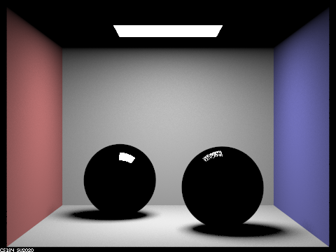
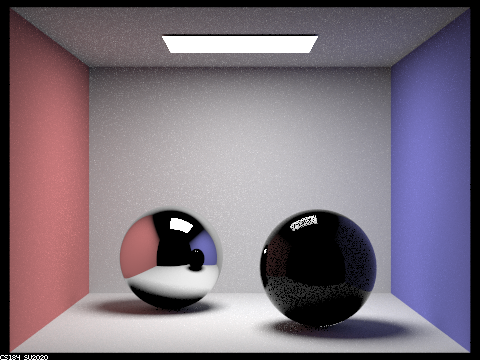
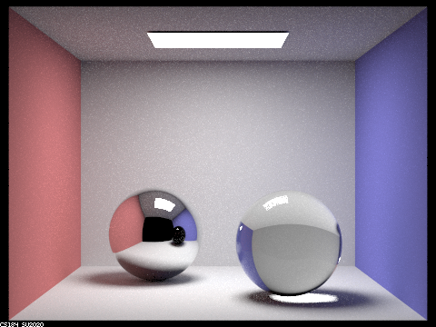
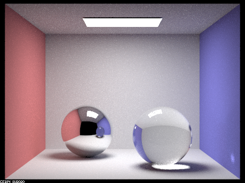
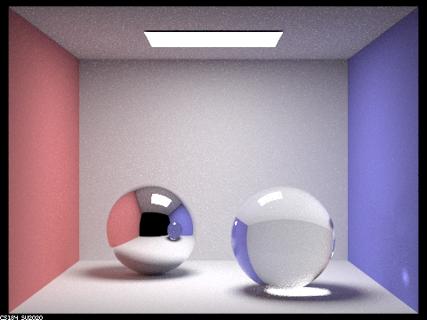
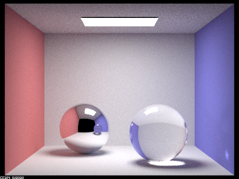

Link to write-up: https://cal-cs184-student.github.io/sp22-project-webpages-melodysifry/proj3-2/index.html
In this project, we have added new features to the physcially based renderer that we built in the first half of this project
The new features include handling the balance between reflection and refraction through transparent materials and also handling
varying levels of depth of field in the virtual camera.
Part 1: Mirror and Glass Materials
To implement the rendering of mirrors and glass, it is important to get reflection and refraction correct. The former was implemented first in a way such the functions. receives a vector and returns it’s reflection at that point.
Refraction was implemented based on logic provided by Snell’s Law. The output vector is assigned a direction if and only if the total internal reflection condition is not fulfilled.
Next, it was important to figure out the proportion of reflect vs refract that each material offered. The Schlick’s approximation was used to determine the ratio of reflection energy to refraction energy, which is then used as a probability to determine if that particular sample ray is one that undergoes reflection or refraction.
Here's a sequence of seven images of scene CBspheres.dae rendered with max_ray_depth set to 0, 1, 2, 3, 4, 5, and 100:
 max_ray_depth set to 0
max_ray_depth set to 0
|
|

max_ray_depth set to 1
|
|

max_ray_depth set to 2
|
|

max_ray_depth set to 3
|
|

max_ray_depth set to 4
|
|

max_ray_depth set to 5
|
|

max_ray_depth set to 100
|
At m = 0, only the light is illuminated
At m = 1, only objects illuminated by direct lighting occurs without any refraction or reflection
At m = 2, 1 reflection is allowed and we can now see the mirror surface
At m = 3, refraction is allowed to occur through the glass and out of it and now we can see the glass surface. however, the reflectionof this glass ball is still dark
At m = 4, we see a glassy ball in the reflection noow
At m = 5, we see light going through the ball and coming out on the other side on the wall
At m = 100, there's higher levels of global illumination since more bounces are allowed. This is closest to the real world image.
Part 4: Depth of Field
4.1 Explanation of the differences between a pinhole camera model and a thin-lens camera model, and explanation of implementation:
With a pinhole camera, everything is in focus. This is because instead of having a lens, every ray is passing through a single point. With the thin lens model, the point pFilm on the image plane can now receive radiance from anywhere on the thin lens. Additionally, rays passing through the lens are refracted and change direction as they pass through the thin lens, which isn’t something we have to account for with a pinhole model. These factors result in only a parts of the image being in focus- a depth of field effect.
To account for these differences, in our implementation, we uniformly sampled a point on the lens using the passed-in parameters rndR and rndTheta. We trace the ray through this point instead of through (0,0,0), and find the refracted direction. We generated the final ray by subtracting pLens from pFocus, normalizing, then transforming the vector into world space to use as the direction, and using pLens transformed into world space + pos as the origin.
4.2 "Focus stack" where we focus at 4 visibly different depths through a scene:
4.3 Sequence of 4 pictures with visibly different aperture sizes, all focused at the same point in a scene:
How we collaborated
We split up the tasks, with Anuj implementing part 1 and Melody implementing part 4, but we collaborated with each other on discussing overall approach and clarifying each other's understanding of the spec and concepts.